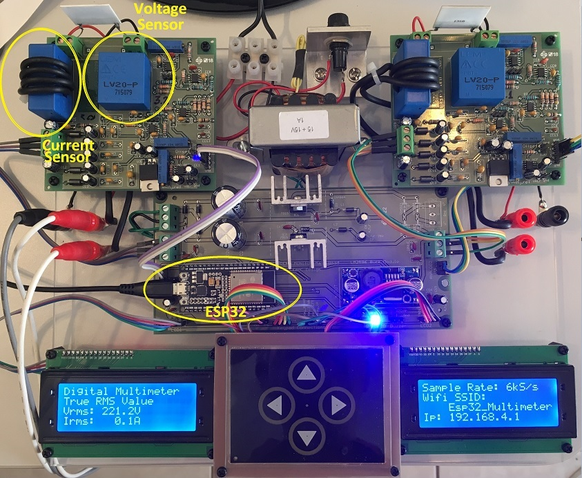
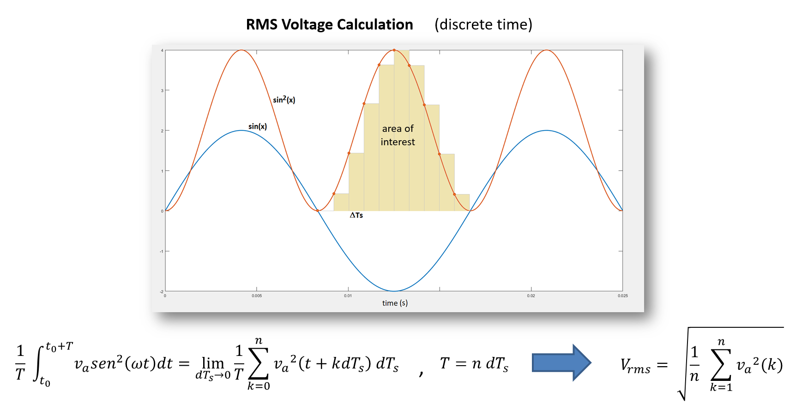
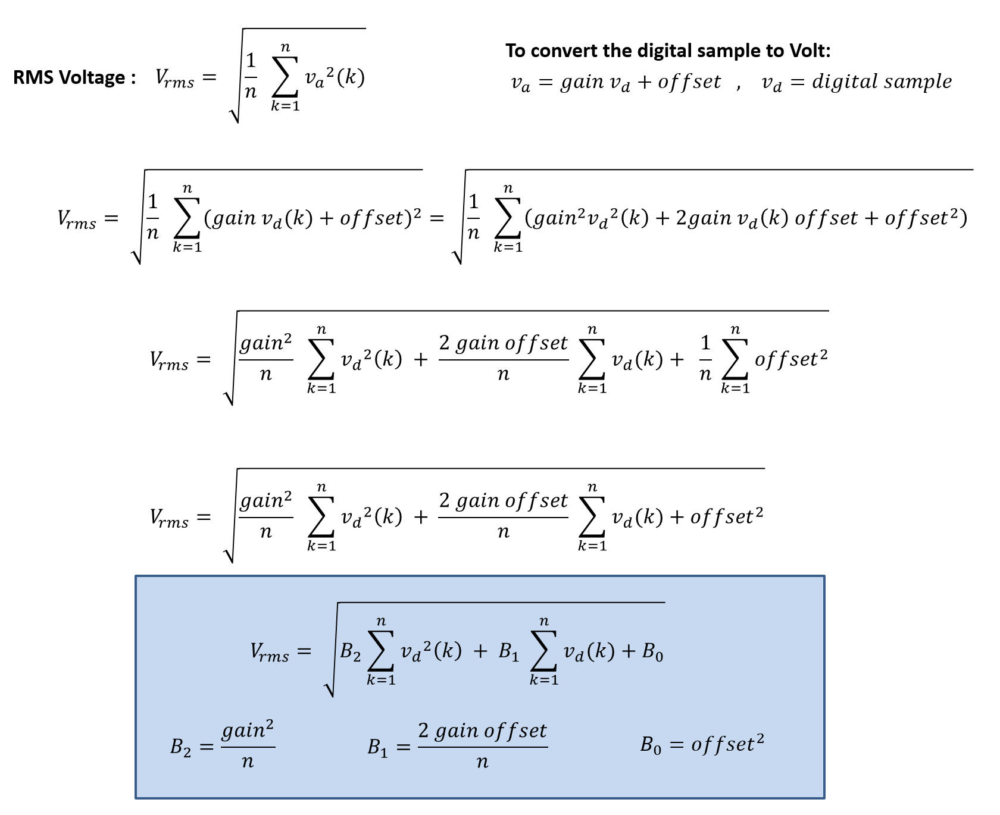
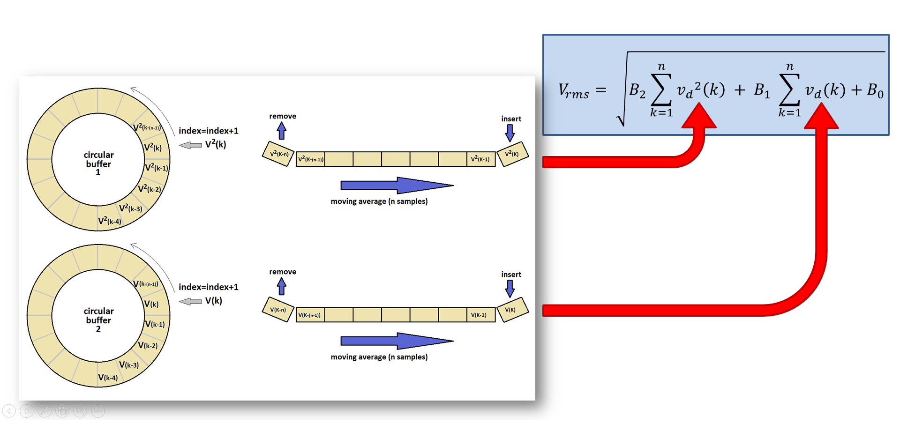

ESP32 does not support floating-point operation inside an interrupt service routine (ISR), then any calculations inside an ISR have to be done in fixed-point arithmetic.
Basic fixed-point arithmetic operations are easy to implement in C language, but you need yet to calculate the square root. Until the moment this page was written, it hasn't found any ESP32 fixed-point library to do that.
Considering the moving average filter with sample rate synchronized by a timer interrupt in RMS calculations, in order to keep the calculations in float on ESP32, some strategy is needed.
In this context, this project presents a proposal de calculate RMS values in ESP32.
Voltage/Current Sensors and Signal Conditioning
In order to get the experimental results, in this proposal, LV20-P and LA55-P were used, voltage and current hall sensors, respectively.
The use of hall sensors is recommended since they provide the galvanic isolation and typically present a high bandwidth response.
The voltage sensor LV 20-P is in fact a hall sensor for a low current level. Because of this it is expensive. See a way to have a cheaper voltage sensor in Differential Voltage Sensor.

Fig.1 - ESP32 Lab Prototype
Moving Average Scheme for RMS Calculations Considering The Previous Summations of Digital Samples
In the present proposal, the summations for average calculations will be done by an ISR using integer arithmetic.
The further calculations to get the RMS values will be done in floating-point arithmetic inside a specific task.
For that reason, the conventional equation to calculate the RMS values seen in Fig.2 will be changed to that one shown in Fig. 3.
This implies that two circular buffers are necessary, one to store the samples and other for square samples, as we can see in Fig. 4.
The same strategy can be used for current measurements.

Fig.2 - RMS Voltage Calculation

Fig.3 - Proposed RMS Calculation

Fig.4 - Moving Average Scheme for RMS Calculation
It is important to emphasize that this calculation strategy is only to circumvent the impossibility of calculating in floating point inside a ISR presented by ESP32.
Of course we have other strategies for sampling synchronization, like the use of millis() or esp_timer_get_time(), which use the simple equation seen in Fig. 2, but with a timer interrupt we have a more precise sampling rate.
If you want a more professional voltmeter, it is recommended to change the microcontroller to one with a more linear adc conversion curve, with an adc triggered by a timer and interrupt resquested by the end-of-conversion event, besides of the desired resolution and capability of float operations within the ISR.
Considering a low cost voltmeter, on which you can get the RMS values using a simple LCD or using a web browser in computer or cell-phone, the ESP32 presents an interesting cost-benefit.
ESP32 Analog to Digital Converter (ADC)
ESP32 has two analog-to-digital converters: ADC1 and ADC2. It is not possible to use ADC2 and Wifi or Bluetooth simultaneously.
GPIO0 (ADC2_1), GPIO2 (ADC2_2), GPIO12 (ADC2_5) and GPIO15 (ADC2_3) are used as strapping pins to configure the boot. In order to use these ADC channels, an external hardware scheme is necessary to keep the boot configuration (external multiplexer).
Unfortunately, according the Espressif Documentation, it seems that the ESP32 ADC's don't support hardware trigger (timers), neither hardware interrupt for end-of-conversion event. In order to see how these resources are interesting, see the page RMS Voltage Measurement Using Arduino UNO where an example for the Atmega328P is presented.
Therefore, you have to use a function with a software start-of-conversion and a software handshaking to get the sample when it is ready.
Considering the default configuration for the adc, analogRead() function takes around 52 microseconds to return the sample while adc1_get_raw(channel) function takes around 36 microseconds. As you can use ESP-IDF functions inside a Arduino program, the second option is recommended, but don't forget to include the respective library.
For a 60 Hz electrical system, 100 samples per period in RMS calculations implies a sampling rate of 6 kHz. Considering the acquisition of two channels and getting samples with adc1_get_raw(channel), only the sample acquisitons take 72 microseconds, which is almost a half of sampling period (166.67us). Take this limitation into account when choosing the sampling rate and the number of channels to acquire, in order to enable the real-time execution of code. Keep in mind that there are several concurrent tasks.
ESP32 and the FreeRTOS
FreeRTOS is an real time operating system for microcontrollers (open source).
ESP32 runs over FreeRTOS considering a default tick of 100 Hz, then it is not possible to transfer data between tasks in higher rates.
As the purpose of this project is to calculate and show the RMS values to the user, the data will be updated at each half second. Do not use a faster update, since the task that consume data can not follow the producer.
Recommendations
Considering the ESP32 devKitC board, there are three mutually exclusive options to provide power:
Micro USB port, default power supply
5V / GND header pins
3V3 / GND header pins
Use one and only one of the options above!
The serial communication presented in the code example shown below is used only for debugging purpose. In normal operation it is better to disconnect the USB cable and use a high quality power source to supply the ESP32, since this will provide a better voltage reference to the ADC, implying the a better measurement accuracy.
In the code example presented below, the ESP32 wifi is configured as access point, but you can change the code to station mode easily, if you intend to use a local network.
The ESP32 code example presents a simple web page written in html. Pay attention in the details, as the C language commands are being used to insert the html code in a string variable, some differences appear, as instance, in the use of double quotation marks, since they have a meaning in the C language and in html. The '/' is used to force the C to ignore it, when it is used for html purpose.
The web page generated by the server is shown in Fig. 5.